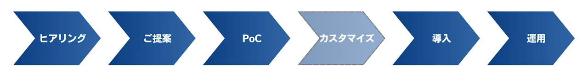

業界の現状
新しい技術の導入や自動化への対応の遅れによって、従来の経験と勘による生産管理から脱却できないのが現状です。また、データ収集のためのERPシステムの導入に失敗し、多大な損出だけでなく、生産停止に追い込まれるケースも多発しています。一方、顧客ニーズの多様化によって製品数が増加したため無駄な段取り替えが発生したり、労働力の不足から既存の設備の有効利用が難しくなってきています。
ソリューションの現状
ERP/MRPベースの生産管理システム、IBP（Integrated Business Planning)の一部としてのシステム、APS（advanced planning and scheduling 先進的スケジューラ）などのソリューションが、さまざまな企業から提供されています。ERP単体の場合には処理的ITだけで最適化は含まれず、IBPの多くは最適化は簡単なルールベース、APSもルールベースのヒューリスティクスューリスが主流です。スケジューリング最適化については、IBM (ILOG OPL) とGoogle (OR Tools)がありますが、実際の問題に適用するのには、カスタマイズが必要になります。
MOAIソリューション
私たちが提供する生産最適化ソリューションは、多数の企業で導入実績のあるアルゴリズムがベースになっており、実務的な付加条件を容易にスケジューリングモデルに組み込むことが可能になっています。また、過去のデータが豊富にある場合には、機械学習を利用した MOAI技術によって、瞬時に最適化を行うことができます。実際に、数十万程度のジョブをもつ大規模問題例でもリアルタイムに良好な解を算出することに成功しています。さらに、スケジューリング単体ではなく、ロットサイズ決定や工程間の在庫の最適化などのさまざまなモジュールが準備されています。これらのサブモジュールを組み合わせることによって、工場内の生産全体を最適化することが可能になります。
提供方法

- MOAIプラットフォームベースのソリューション提供を行っております。
- MOAI技術を含む各種最適化技術で解決可能な課題は、MOAIプラットフォームに含まれない課題も適宜対応可能です。
- 無料相談で課題ヒアリングを行い、その後、適切な提案を行います。
- 対応するMOAIプラットフォーム詳細は下記をご覧ください。